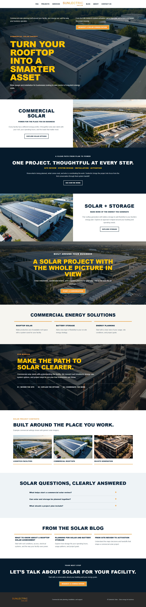
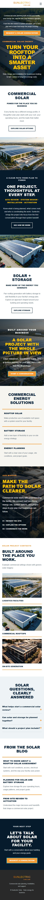
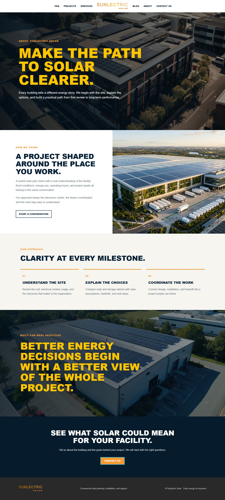
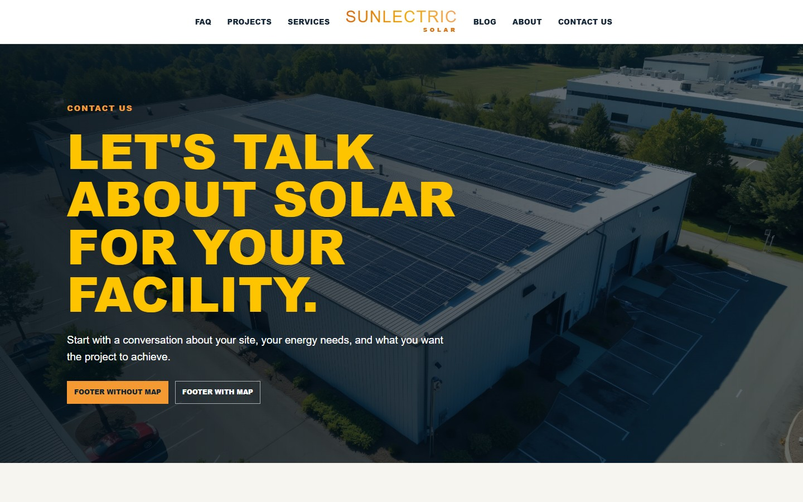
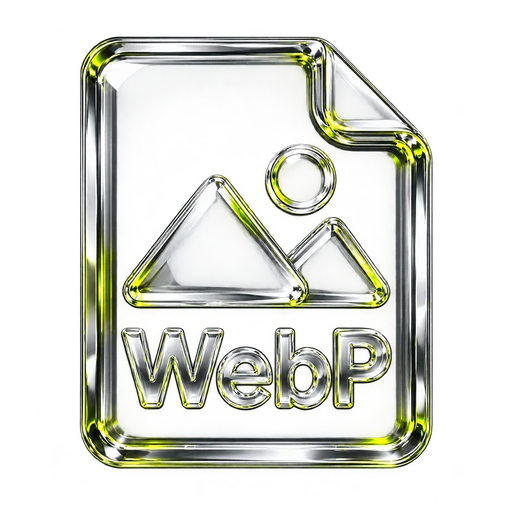

DESKTOP / FULL PAGE


Desktop experienceOpen the static preview ↗
WEB / WORDPRESS / SOLAR THEME
Commercial solar, made clear.
A responsive HTML representation of the private WordPress theme. Preview contact actions do not submit information.
01 / RESPONSIVE PREVIEW
Explore the desktop and mobile layouts, from the first solar consultation through services, project planning, questions, and next steps.


02 / CUSTOMER EXPERIENCE
Give business owners a straightforward way to understand the project, compare options, and decide what to explore next.
Introduce rooftop systems and energy planning in the context of the building and its operating needs.
Present solar generation, storage, and project steps with plain language and clear section hierarchy.
Responsive navigation and consultation actions give visitors a clear path through the page.
Gold headings, orange actions, dark solar photography, and alternating photo sections preserve the source design in Sunlectric branding.
03 / PRESENTATION OPTIONS
Use the single-page layout for a focused introduction, or open the multi-page version with dedicated About Us and Contact Us pages.


A dedicated inquiry page with an optional, keyless OpenStreetMap location.
Open Contact Us ↗04 / BUILD SHEET
A lightweight WordPress theme with an Elementor-editable homepage, responsive layouts, and a small technology footprint.
WordPress theme setup and templates.
Theme files and a visually editable homepage.
Semantic page structure and accessible navigation.
Responsive editorial layout and solar color palette.
Mobile navigation behavior.

Compressed glass artwork for the showcase build sheet.
05 / PROJECT SUMMARY
Sunlectric Solar WordPress brings a commercial solar homepage, a clear project path, and a responsive design system together in a compact theme.
Browse the rendered previews or open the static representation. Demo contact actions are presentational only.